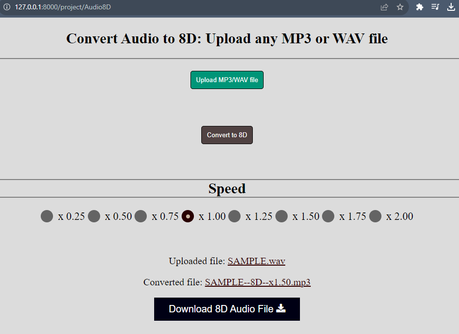

8D Audio Converter ( Web Application )
Python Django based application
-
Open directory "web_site"
-
Run command window in the directory
-
Run "pip install -r requirements.txt" in the command window
-
Run "python manage.py runserver" in the command window
-
Open LINK.TO.LOCAL.HOST/project/Audio8D
